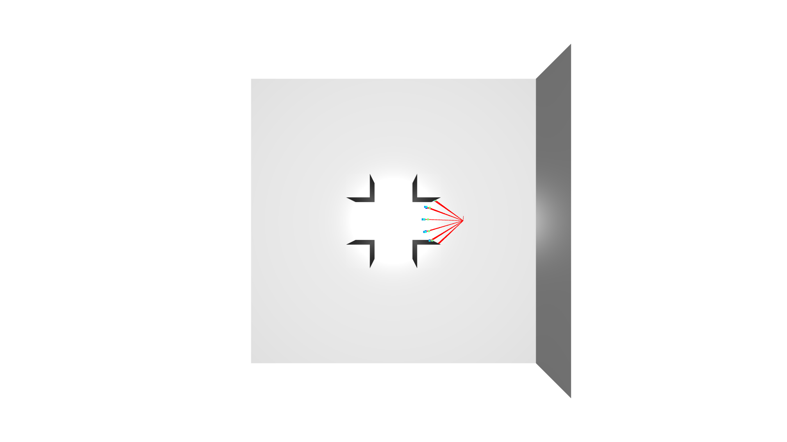

Autonomous Exploration Algorithm for 3D Environment Mapping
Strategy Visualizations
Random Exploration
Greedy Exploration
My Algorithm
Introduction
Traditional exploration algorithms for 3D environment mapping often struggle with balancing exploration efficiency and computational complexity. This project implements and compares three distinct exploration strategies for autonomous robots: Random, Greedy, and my algorithm. The system uses a depth camera sensor to map unknown environments while optimizing for exploration coverage and path planning efficiency.
Methods
The exploration system is implemented in Python, integrating:
- Open3D for 3D visualization and point cloud processing
- Custom occupancy grid mapping for environment representation
- Depth camera simulation for sensor data generation
- Three exploration strategies:
- Random: Baseline implementation with random movement decisions
- Greedy: Maximizes immediate unknown space discovery
- My Algorithm: Custom algorithm balancing exploration and path efficiency
The system features:
- Real-time visualization of exploration progress
- GIF generation for strategy comparison
- Configurable sensor parameters and environment settings
- Collision detection and safe path planning
Results
- My algorithm outperforms both Random and Greedy strategies in:
- Total environment coverage
- Exploration efficiency
- Path optimization
- Visualization tools demonstrate clear differences in exploration patterns
- GIF recordings show real-time exploration behavior
- Quantitative metrics for strategy comparison
Strategy Comparison
The project compares three exploration strategies:
- Random: Samples random actions in the x, y, and z directions near its current position. The reward for each possible action is just a random number. The robot moves without any regard for how much new area it will discover or how efficient its path is. This results in inefficient exploration, often revisiting known areas or making unnecessary moves.
- Greedy: Samples actions near its current position and evaluates each by counting the number of unknown voxels (unexplored space) it would see from that new pose. The reward is the number of unknown voxels visible from the new pose. The robot always chooses the action that immediately maximizes the discovery of new space, without considering the cost of movement. This is more efficient than random, but can get stuck in local maxima or make inefficient moves if a large unknown area is far away.
- My Algorithm: Like the greedy approach, my method samples actions near the current position and evaluates the number of unknown voxels visible from each new pose. However, I add a distance penalty to the reward function:
Reward = (number of unknown voxels seen) - 0.5 × (distance from current pose)
The robot balances between maximizing the discovery of new space and minimizing unnecessary movement. It prefers actions that reveal new areas but penalizes those that require large jumps, leading to more efficient and smoother exploration. My approach outperforms both random and greedy strategies, covering more unknown space with fewer, more efficient moves.
| Strategy | Reward Function | Behavior | Efficiency |
|---|---|---|---|
| Random | Random number | Moves randomly | Low |
| Greedy | Unknown voxels seen | Maximizes immediate discovery | Medium |
| My Algorithm | Unknown voxels - 0.5 × distance moved | Balances discovery & efficiency | High |
Final Scores:
- Random score: 1712
- Greedy score: 1967
- My score: 2211
Score Evaluation: The score for each strategy is calculated based on the total area explored, the efficiency of the path taken, and the ability to avoid obstacles. Higher scores indicate better exploration coverage and more efficient navigation. My algorithm achieves the highest score, demonstrating superior performance in both coverage and path optimization compared to the Random and Greedy strategies.
Discussion
The project demonstrates the importance of balancing immediate exploration gains with long-term path planning. My algorithm's success lies in its ability to:
- Consider both unknown space discovery and movement cost
- Maintain safe distances from obstacles
- Optimize for efficient coverage patterns
The implementation provides a foundation for:
- Autonomous robot navigation
- 3D environment mapping
- Exploration strategy development
- Sensor-based decision making
I developed my custom exploration algorithm, implemented the visualization system, and created the comparison framework for evaluating different strategies. The project showcases practical applications in robotics, autonomous systems, and environment mapping.